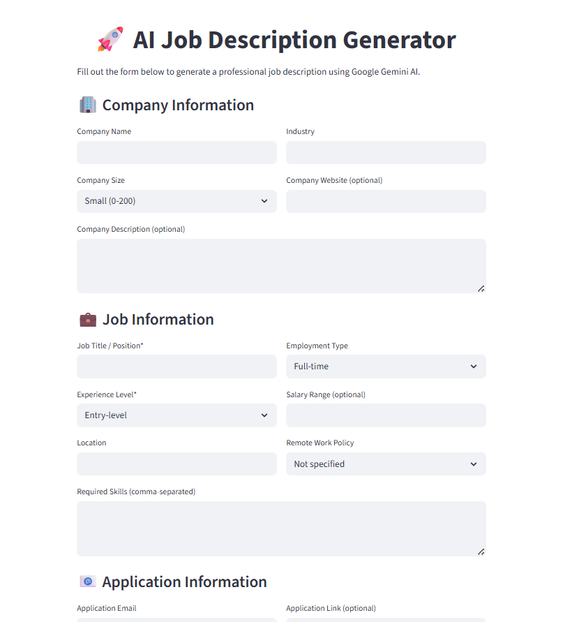
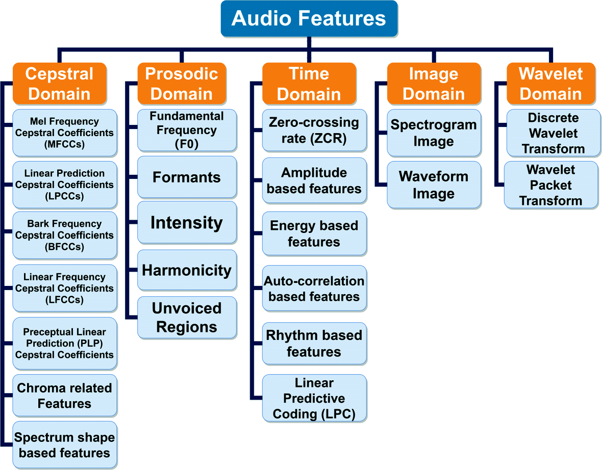
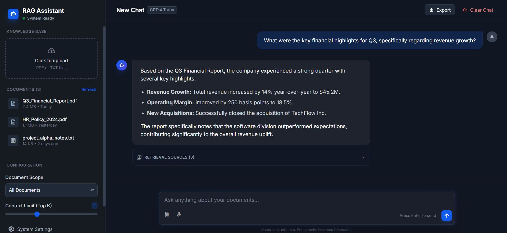
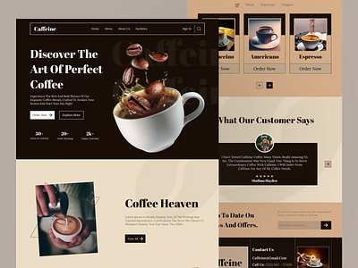
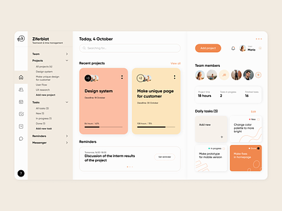
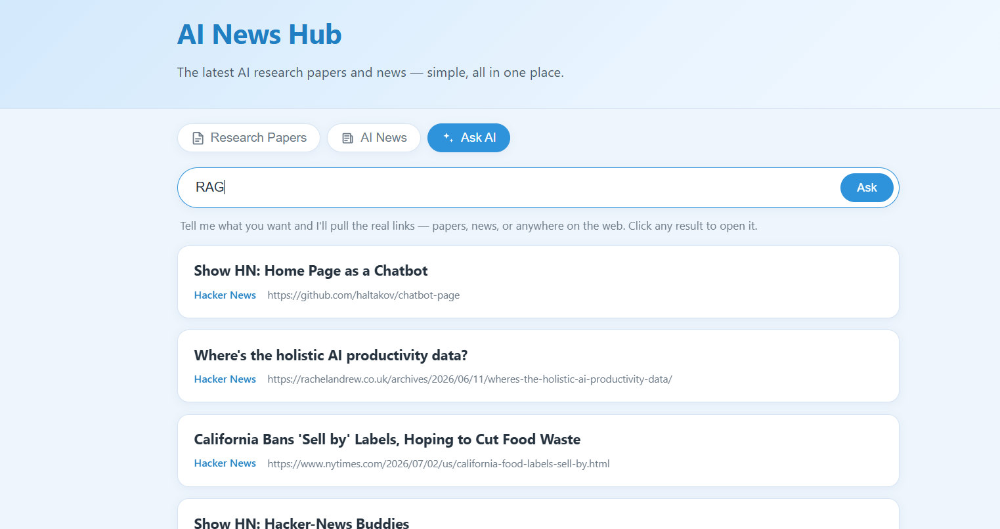

Bank Note OCR — Nepali Currency Detection
Real-time Nepali banknote denomination classifier using computer vision and vector similarity techniques, robust under varied lighting and image quality.
View on GitHubI build
Data Scientist and AI Engineer with 2+ year of hands-on experience building machine learning, NLP, and computer vision systems. I turn complex data problems into measurable business outcomes.
Production-grade AI systems I've built — from computer vision pipelines to RAG chatbots and end-to-end ATS platforms.
Real-time Nepali banknote denomination classifier using computer vision and vector similarity techniques, robust under varied lighting and image quality.
View on GitHub
End-to-end ATS pipeline with Tesseract OCR, spaCy NER, and Sentence Transformer embeddings. LLM-based contextual scoring for automated candidate ranking.
Live Demo
CNN-BiLSTM with attention to classify infant cries (hunger, pain, burping, sleep) from mel spectrograms with near real-time inference.
View on GitHub
Production-ready RAG chatbot using FastAPI + PostgreSQL (pgvector) + Gemini LLM API with Sentence Transformer embeddings for cosine-similarity retrieval. Containerised with Docker-Compose; Streamlit frontend.
View on GitHub
Multi-document chatbot with LangChain + OpenAI API, dynamic conversational forms, and session state management for accurate multi-turn vendor workflows.
View Details
Predicted Gene Ontology labels from amino acid sequences using deep learning, with bioinformatics preprocessing, custom encoding, and class-weighted training.
View on GitHub
A live app that gathers the newest AI research (arXiv, Hugging Face) and news in one place, with an "Ask" agent that pulls real paper and news links on request. FastAPI backend, LangGraph + Gemini agent, deployed on Render.
Live DemoI'm a results-driven AI Engineer and Data Scientist with over a 2 year of hands-on experience deploying intelligent solutions and managing end-to-end AI pipelines.
My expertise spans Large Language Models, Retrieval-Augmented Generation, and data engineering with Docker and modern deep learning frameworks. I build chatbots, implement efficient ETL processes, and deliver data-driven insights that enhance business performance.
My work is on trustworthy AI for medicine and science — models that stay reliable when the data stops looking like the training set, and that signal their own uncertainty instead of failing silently.
I work on trustworthy AI and foundation models: building systems that stay reliable, calibrated, and adaptable across data modalities — text, images, speech, code, scientific data, and narrow domain corpora. My current focus is medical imaging under distribution shift, biomedical language models, and honest evaluation: bootstrap confidence intervals, ablations, out-of-distribution detection, and reporting negative results as clearly as positive ones.
Preprint · Zenodo · doi:10.5281/zenodo.21188527
Preprint · Zenodo · doi:10.5281/zenodo.20935607
Manuscript in preparation, 2026–2027
A track record of shipping AI systems across recruitment, document intelligence, and education.
End-to-end machine learning pipelines — data ingestion, model training, fine-tuning, evaluation, and deployment to production APIs.
Production RAG systems with pgvector, Sentence Transformers, and modern LLM APIs. Chatbots, semantic search, and document intelligence.
Predictive modelling, NLP pipelines, and automated analytics using Python and SQL. Turning raw data into actionable business insights.
Secure, scalable APIs with FastAPI, PostgreSQL, SQLAlchemy, and Docker. Production-grade with proper validation and rate limiting.
Have a project in mind or want to collaborate? Drop a message — I read every one.